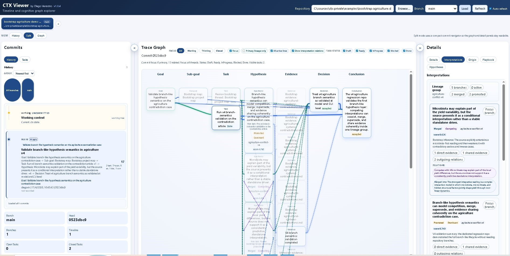
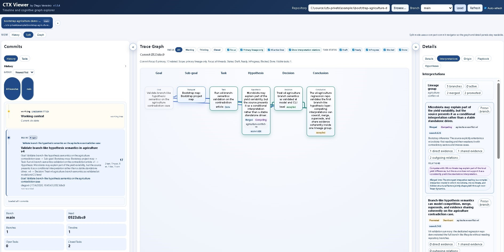

UNJu Talk Deck
A public slide deck for CTX 1.0.14 that explains why CTX became necessary, what problem it solves, and how to use it from a clean VS Code setup with an agent, Git, MCP, and the public landing page.
CTX 1.0.14
CTX 1.0.14 gives agents a local, versioned working memory, a copy-ready MCP server, and a local ACP-style adapter. Install CTX, point the server at a repository, and let Claude, Gemini, Codex, VS Code, Devin, or another MCP-capable client recover goals, tasks, decisions, and runbooks.
Live viewer
Open the running CTX Viewer demoWhen a temporary public viewer session is available, publish it here. Otherwise use the Codespaces quickstart to launch a fresh one.
A public slide deck for CTX 1.0.14 that explains why CTX became necessary, what problem it solves, and how to use it from a clean VS Code setup with an agent, Git, MCP, and the public landing page.
Connect Claude, Gemini CLI, VS Code, Codex, Devin, or another MCP-capable agent to a local CTX
repository with copy-ready configuration for Windows, Linux, and macOS.
Start in read-only mode, verify ctx_plan, then switch to write mode only when
the agent should create CTX artifacts.
CTX 1.0.14 also ships ctx-agent-acp, a read-only local adapter
for ACP-style session flows. MCP remains the main tool-rich agent path today;
ACP is available for clients that want initialize,
session/new, and session/prompt.
The default live demo repository is
examples/ctx/agent-session-continuity, chosen because it shows
multi-session continuity instead of a one-shot graph snapshot.

